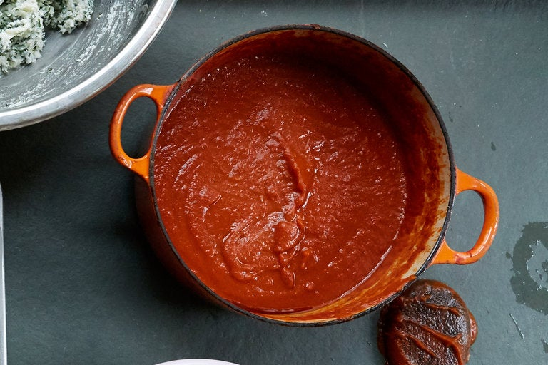

Marinara Sauce

This marinara sauce recipe is very easy to make and the only red sauce
my 5-year-old daughter will eat! Serve with your favorite pasta.
Homemade marinara is almost as fast and tastes immeasurably better than
even the best supermarket sauce — and it's made with basic pantry ingredients.
All the tricks to a bright red, lively-tasting sauce, made just as it is in the south of Italy
(no butter, no onions) are in this recipe. Use a skillet instead of the usual saucepan:
the water evaporates quickly, so the tomatoes are just cooked through as the sauce becomes thick.
Ingredients
- 2 (14.5 ounce) cans stewed tomatoes
- 1 (6 ounce) can tomato paste
- 4 tablespoons chopped fresh parsley
- 1 clove garlic, minced
- 1 teaspoon dried oregano
- 1 teaspoon salt
- ¼ teaspoon ground black pepper
- 6 tablespoons olive oil
- ⅓ cup finely diced onion
- ½ cup white wine
Directions
- Place tomatoes, tomato paste, parsley, garlic, oregano, salt, and pepper in a food processor;
blend until smooth.
- Heat oil in a large skillet over medium heat. Add onion and cook until slightly softened,
about 2 minutes.
- Stir in blended tomato sauce and white wine.
- Simmer, stirring occasionally, until thickened, about 30 minutes.